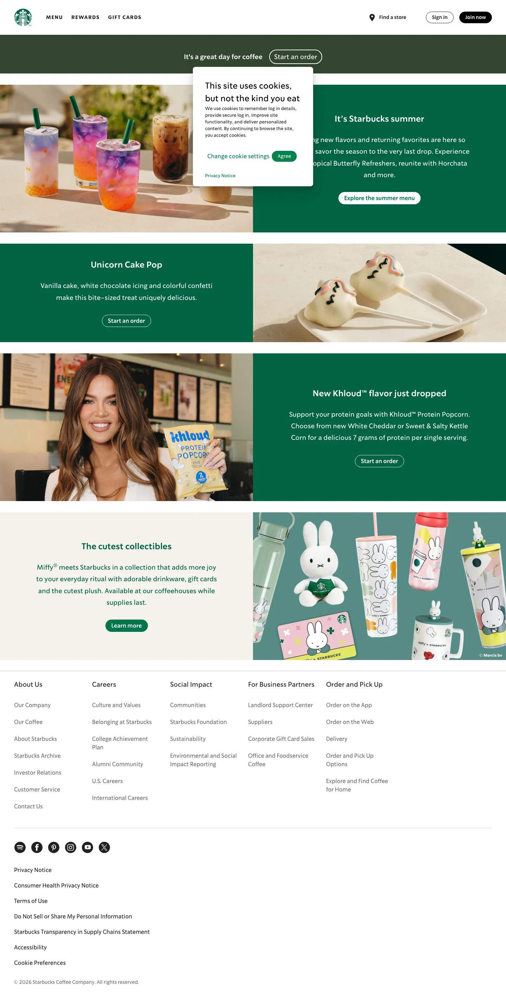

Starbucks 的 Design.md 主题展示，围绕暖色调、消费品牌、电商零售、品牌展示组织页面。
Global coffee retail brand. Four-tier green system, warm cream canvas, full-pill buttons.

#006241: #006241#000000: #000000#ffffff: #ffffff#a0a0a0: #a0a0a0#fbbf24: #fbbf24#8a8a8a: #8a8a8a#0a0a0a: #0a0a0a#e0e0e0: #e0e0e0display: Helvetica Neuebody: Manropemono: ui-monospacehints: Helvetica Neue,Manrope,ui-monospace,Intercontrol: 8pxcard: 8pxpreview: 8pxpill: 9999pxsource: design-mdxxs: 0.16pxxs: 1.6remsm: 16pxmd: 6.4remlg: 64pxxl: 2.8remxxl: 45pxxxxl: 24pxsection: 36pxsection-lg: 7pxhero: 0.01emband: 50pxspace-13: 14pxspace-14: 8pxspace-15: 2.4remspace-16: 8.8remsource: design-md